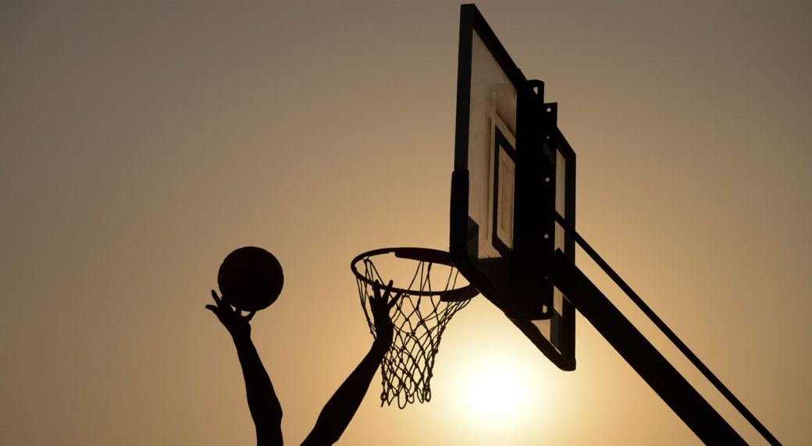
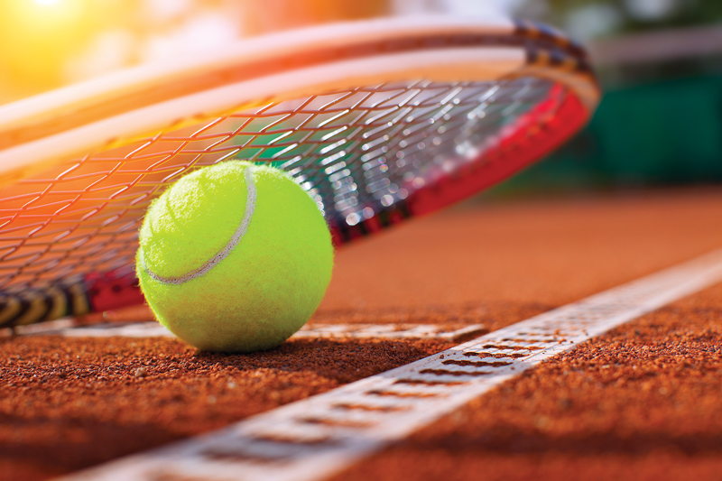
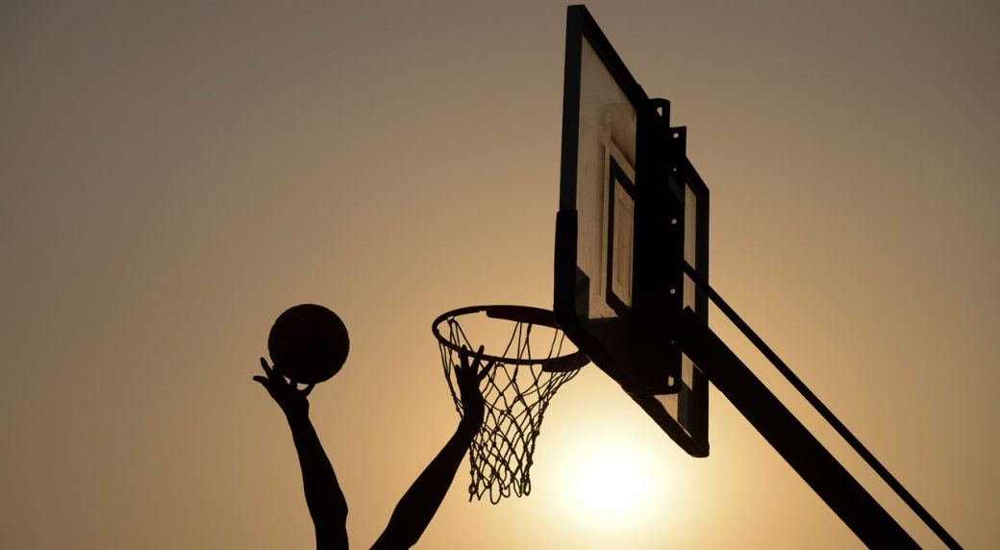
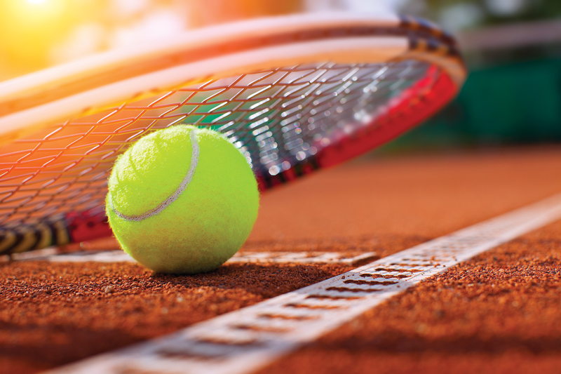

All about sports

 



Sport pertains to any form of physical activity or game,[1] often competitive and organized, that aims to use, maintain, or improve physical ability and skills while providing enjoyment to participants and, in some cases, entertainment to spectators.[2] Sports can, through casual or organized participation, improve participants' physical health. Hundreds of sports exist, from those between single contestants, through to those with hundreds of simultaneous participants, either in teams or competing as individuals. In certain sports such as racing, many contestants may compete, simultaneously or consecutively, with one winner; in others, the contest (a match) is between two sides, each attempting to exceed the other. Some sports allow a "tie" or "draw", in which there is no single winner; others provide tie-breaking methods to ensure one winner. A number of contests may be arranged in a tournament producing a champion. Many sports leagues make an annual champion by arranging games in a regular sports season, followed in some cases by playoffs.
| Football | Basketball | Tennis | |
|---|---|---|---|
| Best player | Lionel Messi | Michael Jordan | Rafael Nadal |
| Most titles | Lionel Messi | Bill Russell | Jimmy Connors |
| The richest | Cristiano Ronaldo | Michael Jordan | Roger Federer |
Sport is generally recognised as system of activities based in physical athleticism or physical dexterity, with major competitions such as the Olympic Games admitting only sports meeting this definition.[3] Other organisations, such as the Council of Europe, preclude activities without a physical element from classification as sports.[2] However, a number of competitive, but non-physical, activities claim recognition as mind sports. The International Olympic Committee (through ARISF) recognises both chess and bridge as bona fide sports, and SportAccord, the international sports federation association, recognises five non-physical sports: bridge, chess, draughts (checkers), Go and xiangqi,[4][5] and limits the number of mind games which can be admitted as sports.[1]